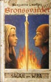

|
Startsidan
Böcker
Dramatik
Kultur-/barnprojekt
Margareta Lindberg |
|

1998 |
|
"Bronssvärdet, den andra fristående boken i "Sagan om Wira" - är någonting så ovanligt som en thriller i svensk bronsåldersmiljö. Den är till och med en hyggligt bra thriller med spännande konflikter, häftiga vändpunkter och en mycket intressant tidsmiljö." Kent Hägglund DN Bronsålderspojken Gadd vaknar efter en fest. Hans vän Gylle står böjd över honom. "Men förstår du inte vad du har gjort!" "Nä-ä", sa Gadd. "Du har dräpt din egen far! Olyckliga barn! Du har dräpt Gunno. Din egen Far!" Gadd minns ingenting. Vännerna kommer överens om att dölja vad som hänt. Men det finns ett vittne. Trälflickan Anim, som är förälskad i Gadd. Gadd tar upp jakten på henne. När Anim ser honom komma går hon honom till mötes. Lämplig för mycket läsvana barn från 11 år och vuxna. Boken finns på bibliotek. Illustrationer: Svenska hällristningar. Omslag: Svante Segelson. IBSN 91-29-64564-6. Utgiven av Rabén&Sjögren 1998. |